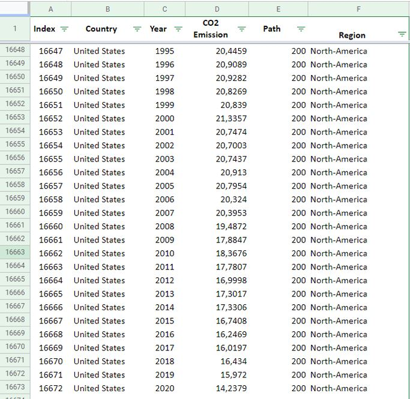
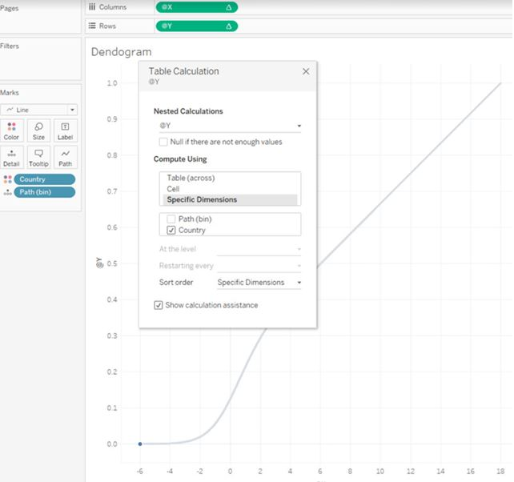
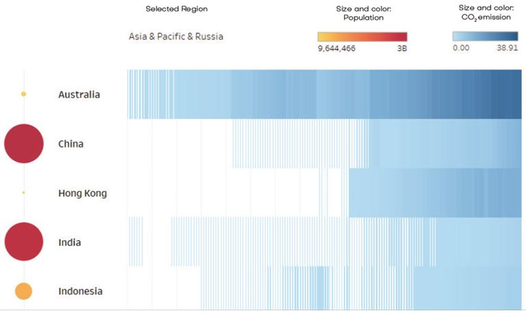

Annual CO₂
Emission
The project explored long-term CO₂ emission patterns across countries and regions, with the goal of turning a large historical dataset into a visual structure that could be read and compared quickly.
I combined historical emissions data with population information and sector-level context, using Tableau for data exploration and visual development, then Adobe InDesign for the final editorial composition.
The final piece connects analytical visualization with information design: the data remains central, while hierarchy, typography and composition guide the reader through the story.
Starting from the dataset.
The project began with historical country-level CO₂ emission data. The dataset was structured by country, year, emission value and region, providing the basis for the longitudinal comparison.

Building the visual logic in Tableau.
Tableau was used to test calculations, structure the time-based comparison and develop a visual system that could represent emission intensity across countries and regions.

Connecting emissions with population.
The visualization evolved into a combined encoding system: blue intensity represents CO₂ emissions, while circle size and color provide population context. This allowed the same view to communicate both environmental impact and scale.

From analysis to information design.
The Tableau visualizations were brought into Adobe InDesign and developed into a single editorial composition. The final design combines the country-level timeline, population context and sector breakdown within one visual hierarchy.

Our World in Data — historical CO₂ emissions data
Worldometer — population data